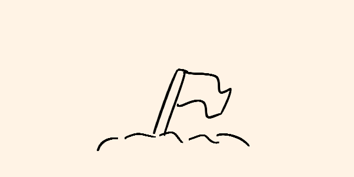

Han pasado meses desde la Gran Caída, desde el instante en que el parásito negro surgió de Pelstrot, extendiéndose como una sombra implacable sobre la humanidad. Lo que alguna vez fueron ciudades vibrantes, llenas de vida, ahora están muertas. Los campos están vacíos, las calles son testigos de un silencio abrumador, y lo que queda de la civilización humana pende de un hilo. Es en este escenario desesperado que la Unión de la Nueva Orden, una coalición de las pocas naciones sobrevivientes, tomó una decisión que cambiaría el curso de la historia: el bombardeo nuclear de Pelstrot y sus ciudades más importantes.
La Unión de la Nueva Orden se formó apenas unas semanas después del colapso global, cuando las naciones que aún podían sostener un gobierno funcional se unieron en una alianza para intentar coordinar una respuesta ante la crisis sin precedentes. Siloon, Jilson, Garmar y otras pequeñas naciones cercanas a Pelstrot formaron el núcleo de esta unión, junto con territorios más alejados que aún no habían sucumbido al parásito. Desde el principio, la idea de usar armas nucleares fue una posibilidad inquietante que flotaba en las conversaciones, pero nunca fue tomada en serio... hasta que la situación empeoró.
Las primeras semanas se gastaron en intentos de contención. Equipos especiales fueron enviados a Pelstrot para buscar información y muestras, tratando de comprender al parásito. Se implementaron cuarentenas, se sacrificaron poblaciones enteras en un intento desesperado por evitar que la infección cruzara las fronteras, pero todo fue en vano. La expansión del parásito no parecía detenerse ante ningún obstáculo, y pronto quedó claro que la humanidad estaba perdiendo la guerra. La desesperación empezó a filtrarse en los consejos de la Unión.
Durante meses, la Unión de la Nueva Orden se dividió en dos facciones claras: aquellos que creían que aún había esperanza de encontrar una solución científica para combatir el parásito y aquellos que veían la aniquilación total como el único camino hacia la supervivencia. A medida que la infección se expandía, los informes que llegaban desde Pelstrot se volvían cada vez más sombríos. Los equipos enviados regresaban con historias de horror, o no regresaban en absoluto. Las criaturas, infectadas y transformadas por el parásito, eran cada vez más numerosas y violentas, atacando con una furia y desesperación que no tenía precedentes.
Los científicos advertían que los bombardeos nucleares podrían ser contraproducentes, que el parásito podría reaccionar de manera impredecible ante la radiación, quizás incluso volverse más peligroso. Pero para entonces, la Unión de la Nueva Orden había perdido demasiados territorios, demasiada gente. Los líderes, enfrentados a la desesperación, comenzaron a inclinarse hacia la opción más radical: destruir todo lo que quedaba en Pelstrot y sus alrededores.
Final". En una sala subterránea, en algún lugar seguro y oculto de Siloon, los líderes de la Unión se reunieron con sus asesores militares y científicos más confiables. Las transmisiones de video mostraban imágenes devastadoras: ciudades completamente arrasadas, personas infectadas vagando sin rumbo, gritos ahogados resonando en la oscuridad. La infección había llegado a las puertas de Siloon y Jilson, y la moral estaba por los suelos.
El presidente de Siloon, un hombre antes conocido por su compasión y principios, fue el primero en romper el silencio, proponiendo la eliminación completa de Pelstrot y sus grandes ciudades mediante un ataque nuclear coordinado. Fue una sugerencia recibida con horror y alivio a partes iguales. Nadie quería ser el primero en hablar, en apoyar la idea abiertamente, pero la tensión en la sala era palpable. Finalmente, uno a uno, los representantes fueron cediendo, aceptando que era la única opción que les quedaba.
Se elaboró un plan que implicaba el lanzamiento de múltiples cabezas nucleares sobre Pelstrot, las ciudades cercanas y cualquier punto que se considerara un foco del parásito. La idea no solo era destruir a las criaturas y frenar la infección, sino también asegurar que ninguna forma de vida, infectada o no, pudiera sobrevivir allí.
Oficialmente, la Unión de la Nueva Orden justificó la decisión como un "acto necesario para la preservación de la humanidad". Argumentaron que los bombardeos evitarían la propagación a las pocas áreas que aún no habían sido tocadas por el parásito. Aseguraron que, si quedaba alguna posibilidad de supervivencia, pasaba por la eliminación completa del origen del desastre, por cruel que pareciera. Para muchos, la idea de sacrificar millones para salvar miles parecía un precio alto, pero la alternativa era la extinción completa.
Se enviaron comunicados a las poblaciones afectadas, rogando a los pocos supervivientes que quedaran en las áreas de impacto que evacuaran si aún podían hacerlo. Pero la mayoría de los que recibieron esas advertencias ya estaban más allá de la salvación. Las criaturas infectadas eran los únicos habitantes de esas ciudades, y la Unión de la Nueva Orden ya no los veía como personas.
El bombardeo se llevó a cabo con precisión quirúrgica, utilizando tecnología de última generación para garantizar la devastación completa. Misiles fueron lanzados desde submarinos, desde bases aéreas y plataformas móviles, coordinados en un ataque relámpago que culminó en una serie de explosiones nucleares que iluminaron la noche como un falso amanecer. El cielo se tiñó de rojo y naranja, y el rugido de la destrucción reverberó a kilómetros de distancia. Las ciudades, una tras otra, desaparecieron en un mar de fuego y cenizas.
La Tierra tembló, y con cada detonación, se perdía una parte de la humanidad, no solo de las vidas que quedaban allí, sino de nuestra propia esencia. Habíamos destruido lo que una vez amamos, lo que alguna vez nos definió, en un intento desesperado por salvar lo que quedaba.
El plan fue considerado un éxito militar, pero la verdad es que nadie sabía realmente si había funcionado. Los informes sobre el parásito seguían siendo vagos, y las consecuencias de la radiación aún estaban por verse. Las comunicaciones desde las zonas bombardeadas se silenciaron para siempre, y la Unión de la Nueva Orden comenzó a prepararse para una nueva fase: reconstruir lo que quedaba, si es que había algo que reconstruir.
La humanidad había apostado todo en una última jugada desesperada. El bombardeo nuclear de Pelstrot y sus ciudades marcó el final de una era, y el inicio de una lucha aún más incierta por la supervivencia en un mundo devastado, donde la victoria parecía tan amarga como la derrota.
